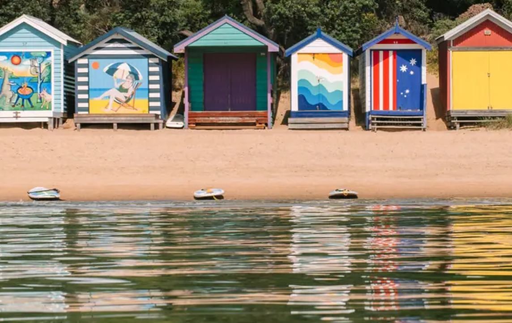

Peninsula Insider
One more hour.
Use it well.
Choose a short foreshore segment and set a turn-back time.

Photo · Courtesy of Visit Victoria
Mornington, Mornington Peninsula.
Explore this week’s planpeninsulainsider.com.au
Choose a short foreshore segment and set a turn-back time.

Photo · Courtesy of Visit Victoria
Mornington, Mornington Peninsula.